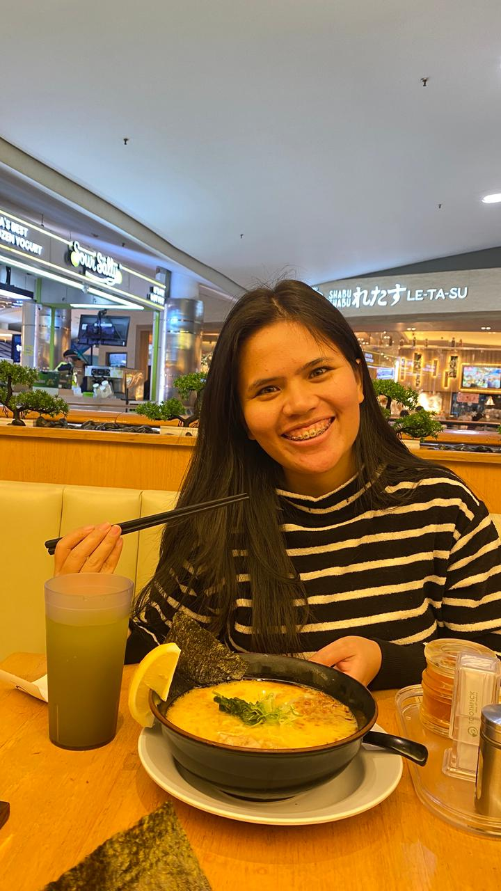

Tuhan baik sekali mempertemukan aku dengan kamu.
Kamu bukan cuma bahagiaku,
tapi alasan aku ingin jadi pria yang lebih baik setiap hari.
"Lihatlah, cantik engkau, manisku."
– Kidung Agung 1:15

Dari anak Network yang ingin romantis ala ala programmer 🤍